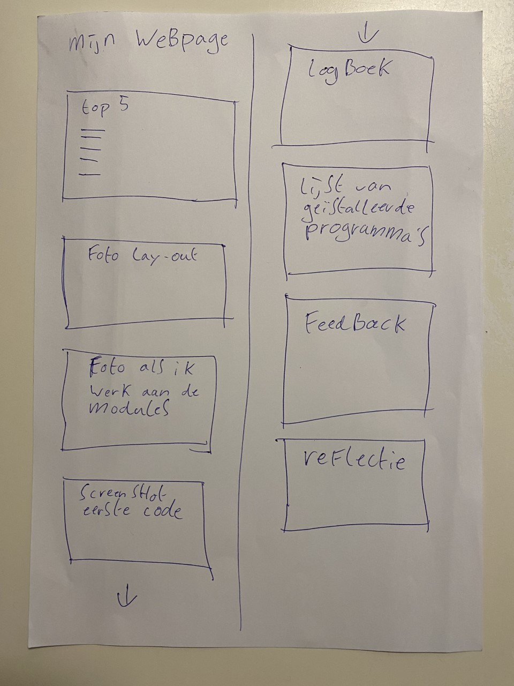
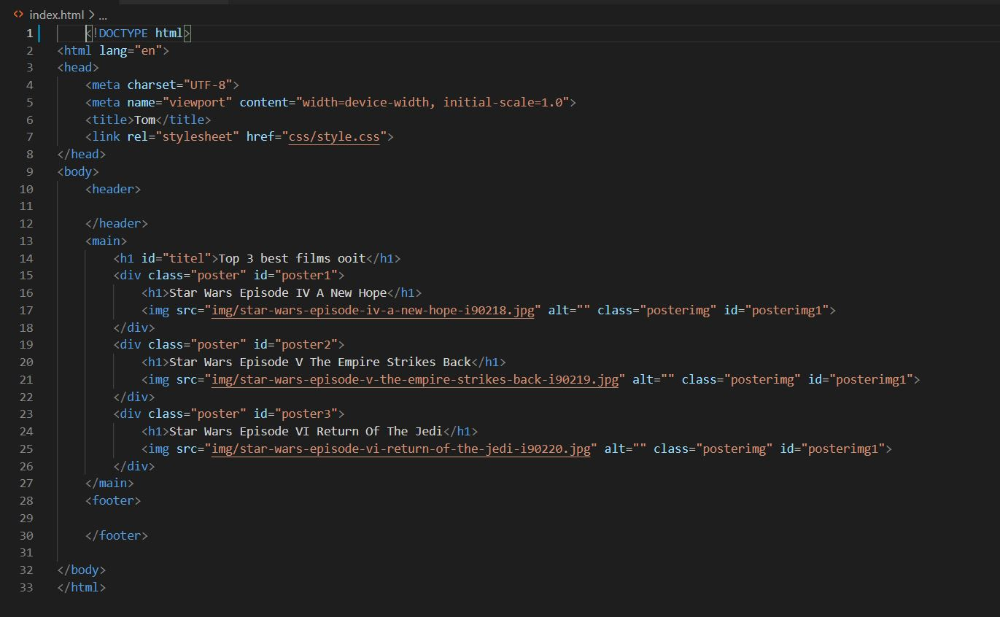

Mijn persoonlijke webpage
Top 5 leukste dingen die ik heb gedaan in dit blok:
- Leren mijn eerste code te schrijven
- Met HTML leren werken
- De opmaak van een website met CSS
- 4
- Mijn eigen webpage maken
Foto van layout
Foto van mij aan het werk
Screenshot eerste code
Logboek
Lijst van geïnstalleerde programma's:
- Visual Studio Code
- Microsoft Teams
- Google Chrome
- Git
- 7-Zip
Feedback
De eerste versie van Tom's webpage was heel netjes en strak, maar met nog weinig kleur waardoor het niet de aandacht trok. Nu is zijn webpage veel kleurrijker en oogst het veel professioneler. Er is ook veel code gebruikt, vooral veel nieuwe code. Hij is al heel ver, maar de code mag nog wel wat meer gestructueerd, zodat je er makkelijk doorheen kan lezen.
Reflectie